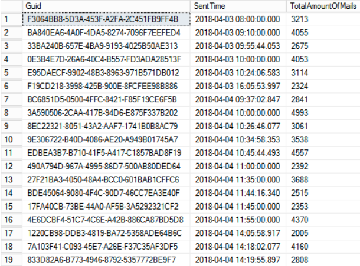
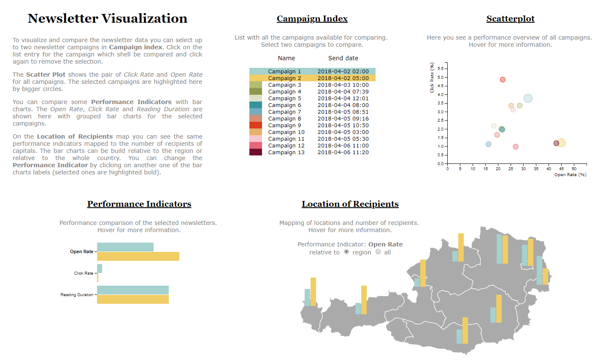

Report
Group Members: Stefan Wolfsteiner, Lisa Kritzinger, Hiuwai Chan
Dataset
For this project we are visualizing tracking data of email newsletter campaigns. The data was provided by a company at which one of the group members wworks.
The dataset consits of two different parts. The actual Behavioural Data and the Meta Data of the newsletter campaigns.
All data is completly anonymized, no linking to the actual recipients is possible.
- Meta-Data of Newsletter Campaign
- ID, Name, Time of Sending, Sent Mails, Total Clicks and Openings
- Behavioural Data (All include Send ID and Mail ID)
- Openings - Location (based on IP)
- Read Times - Duration (up to 10 seconds)
- Clicks - Link ID, Location (based on IP)
Meta-Data

Behaviour Data

Tasks
- The user can see all the newsletter campaigns in the datset.
- Proposed solution: Show a table with all campaigns.
- The user can quickly evaluate the performances of all the campaigns in the dataset and compare them.
- Proposed solution: Show a scatterplot comparing the Click Rate and the Open Rate for all the campaigns.
- The user can compare two selected newletter campaigns by their key performance indicators.
- Proposed solution: Two campaigns can be selected in the table and grouped bar charts then show the Open Rate, Click Rate and Reading Duration.
- The user can also compare the performance indicators of the selected campaigns for different regions.
- Proposed solution: A performance indicator can be selected in the grouped bar charts
and this indicator is then displayed for each region on top of a map.
Implementation
Here you can see the final result of our implementation:

Each visualisation (Table, Scatterplot, Grouped Bar Charts, Bar Charts on map) are implemented with d3.js.
All but the table are visualized with svg elements. The table is build with HTML, but also using d3.js.
The implementation is separated in 4 .js files. The index.js file contains the binding to the dataset and defines the data structure.
The vis.js contains the implementation of the list of campaigns, here also the field for the currently selected campaigns is defined.
The bar charts for the performance indicators is defined in this file as well.
A separate scatterPlot.js js file consists of the implementation for the scatterplott.
Another file map.js consists of the implementation for the location based visualization.
The map itself is a svg image, which is loaded from the server. We got it here: https://simplemaps.com/resources/svg-at
For the color coding a predefined color array is used, where each color is used for a certain campaign. 15 colors are defined, so the dashboard works for up to 15 campaigns.
Installation
Installation: Just run "npm install" and "npm start". Make sure node.js is installed.
Or just visit: https://infovis2018.azurewebsites.net/
Limitations
Our solution can handle just a small number of campaigns (13 campaigns in our example dataset). The table would also need paging and maybe also sorting.
The colors for the table and scatterplot could be removed completly. Only the selected campaigns need to be colored.
With too many campaigns, the scatterplot would be problematic too.
Very small values for the performance indicators make it hard to get the tooltip when hovering.
When the bar charts on the map get to small, they vanish completly. After seeing this we though that it might actually be a good thing, but it was not intended.
Answers to the tasks
- The user can see all the newsletter campaigns in the datset.
- As we proposed above, we show a table with all campaigns.
- The user can quickly evaluate the performances of all the campaigns in the dataset and compare them.
- The user can view a scatter plot showing the pair of Click Rate and Open Rate for all campaigns, where the two selected ones are highlighted.
- The user can compare two selected newletter campaigns by their key performance indicators.
- The user can select up to two newsletter campaigns in the table.
- The user can compare performance indicators of the selected campaigns with bar charts for Open Rate, Click Rate and Reading Duration.
- The user can also compare the performance indicators of the selected campaigns for different regions.
- The user can view location dependencies of all performance indicators by a map which shows all indicators mapped to the number of recipients of capitals, one the one hand relative to the region or to the whole country.
Findings/Insights
- The bar charts on the map where sometimes very small, as Vienna had the largest number as capital city, therefore we decided to let the user switch between the whole country and the regional view.
- The map seems to be one of the more interesting visualization, e.g. by comparising campaign 5 and 6, campaign 6 seems to be better everywhere in the bar charts, but the map shows that the click rate in Tirol was very much better for campaign 5.
- The scatter plot shows, that higher open rates do not always result in higher click rates.
- The reading duration seems to be high for all the campaigns. Maybe the ten second limit for the max readtime tracking is not high enough.
Conclusion
- D3 was very nice to implement once you get used to it.
- But a major problem were the different d3 versions. Search results on google always finds examples for older versions.
- This was especially true for the transitions!
- We also found that there is a huge number of plugins, which we couldn't use. For future projects it is worth investigating them.
- But overall the development experience was very good and we are pleased with the result.